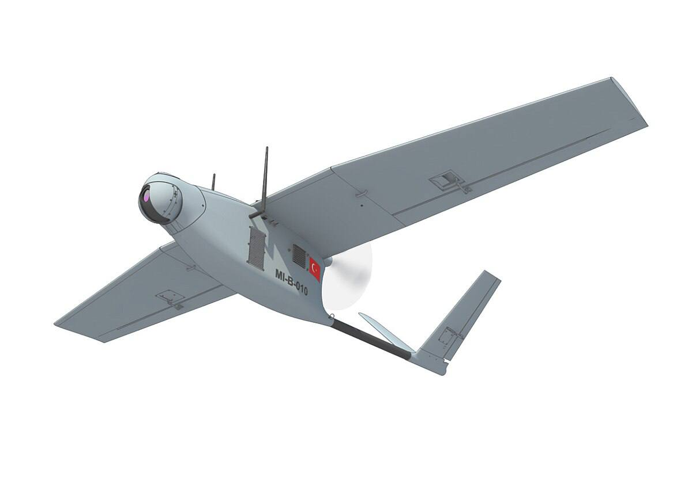
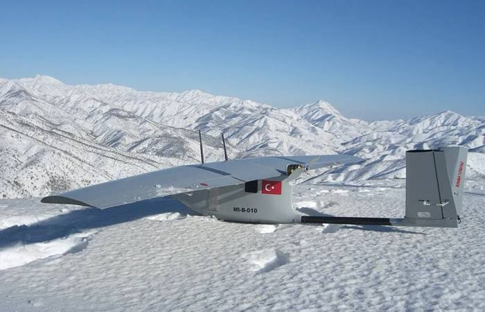
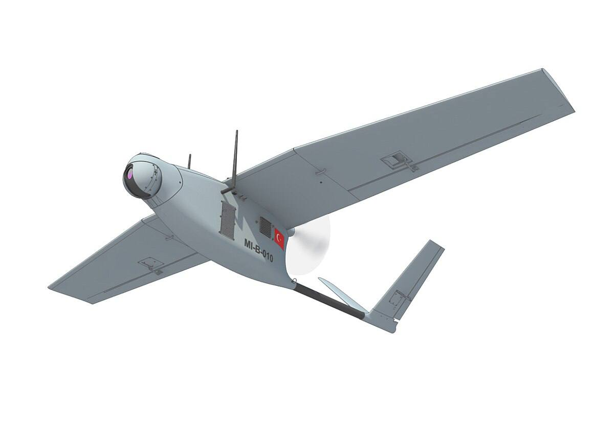
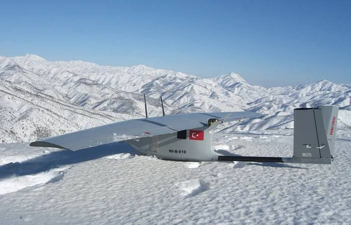
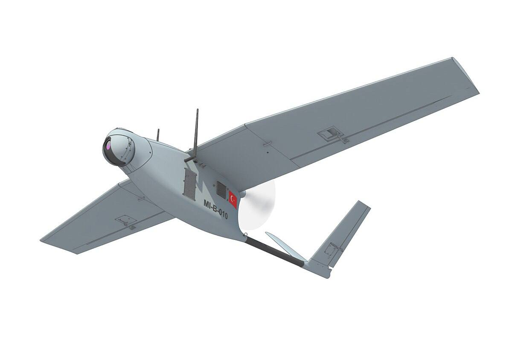
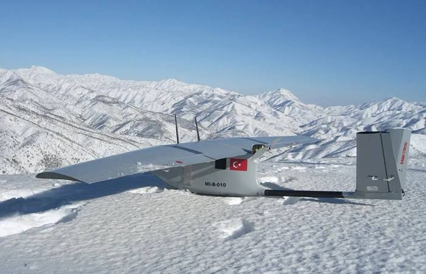
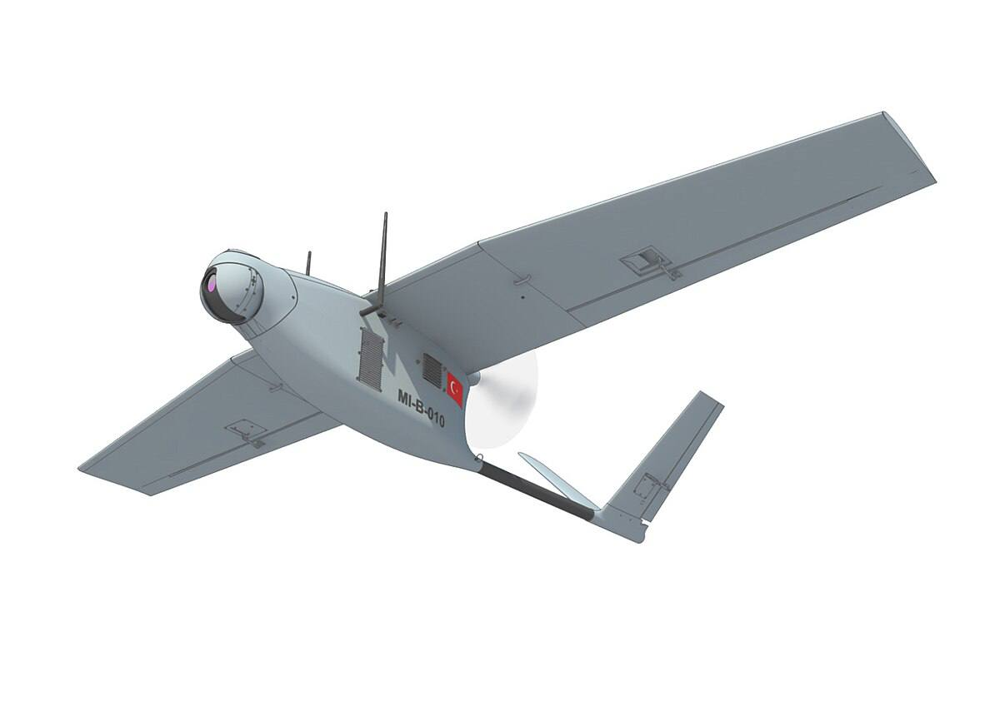
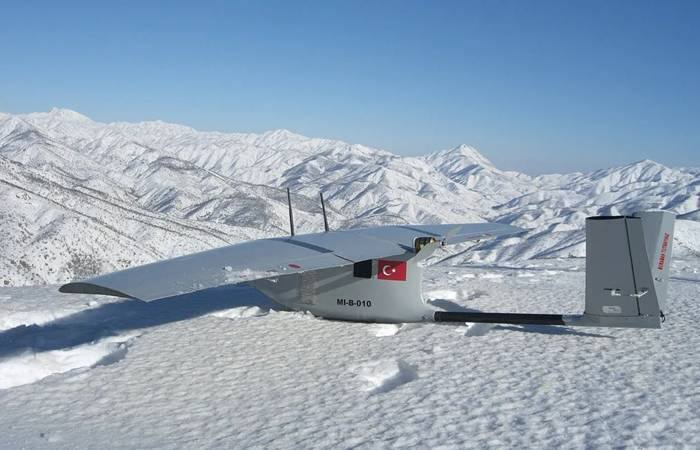
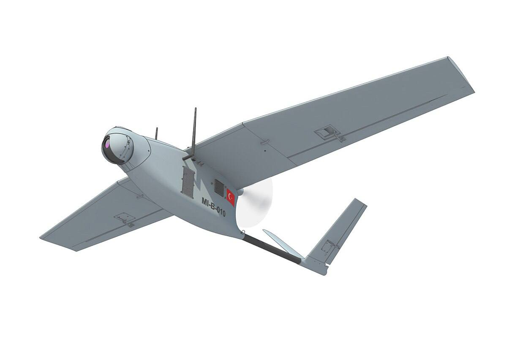
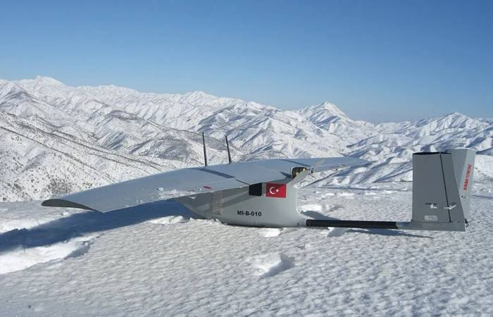

TechUAV Wiki
Эта страница не содержит исполняемого кода.
BAYRAKTAR MINI
CETUS
LELEKA-100 (BASIC)
LELEKA-100 (EFT)
LELEKA-100 LR
ЧАКЛУН
UJ-26 BEAVER (БОБЕР)
DISRUPTOR
FP-1
DAGGER (Кинжал) (МИКОЛА 1)
ДОВБУШ Т-20
Безымянный 1737839598
ОГЛАВЛЕНИЕ
Список сформирован из темы
Классификатор бпла всу тип самолетный винт сзади
Источник темы
ТЭЧ БпЛА | FPV
243 BAYRAKTAR MINI
Из темы
Классификатор бпла всу тип самолетный винт сзади
Из источника
ТЭЧ БпЛА | FPV
BAYRAKTAR MINI
BAYRAKTAR MINI РАЗВЕДЫВАТЕЛЬНЫЙ

 
